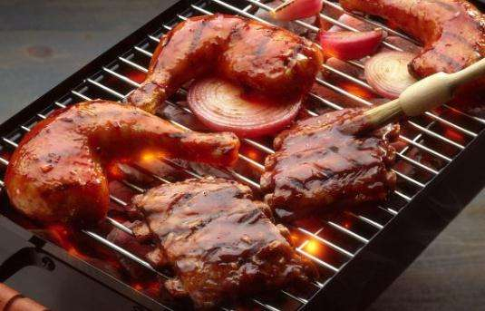

狐臭，给很多患者带来了不便，由于狐臭的刺鼻气味使人感到特别的厌烦，闻到这种气味的人大多掩鼻远离。这样就给狐臭患者带来了心理上的阴影。为什么狐臭会加重呢?狐臭不仅会遗传，还与很多后天因素有关。
1. 垃圾食品加重狐臭：
腋臭和饮食文化有着密切的关系，改革开放以来，大量的西方文化涌进中国，国内纷纷效仿西方的饮食习惯，吃起了快餐，研究证明，正是西式快餐这种垃圾食品，有导致腋臭患者大量增加的趋势。因此腋臭患者应该做到：少吃肉，少吃油炸食物。经常保持腋窝部的干燥和清洁，这样可以减少臭味的散发。少做过量的运动，少饮食刺激性的食物，保持生活规律，情绪稳定。

2. 酒是后天造就狐臭的主要因素
专家专门研究了一下这部分后天狐臭患者，发现后天造就狐臭的主要因素竟然是酒。西方人患狐臭的人多，主要就与他们的自身饮食习惯有关，西方人喜欢吃肉，还有就是无论是在什么场合，无论是鸡尾酒、白兰地、还是伏特加，在他们眼里酒就是一种饮品。酒的主要成份酒精，对人体具有很大的刺激性。
我们平常所了解的是，酒精对人体的大脑和神经系统具有很大的刺激作用，会导致大脑反应迟钝，身体失去平衡，甚至异常兴奋等。其实，酒精也会加重腋臭。酒精具有高挥发性，容易使人排汗加重，排汗时，在带走皮肤热量的同时也带走了皮肤中的水分和体内的脂质分子。这样不仅会造成皮肤干燥、粗糙、皮脂分泌旺盛，还会使毛孔粗大，排汗量增加，汗液更加粘稠，从而加重病症。